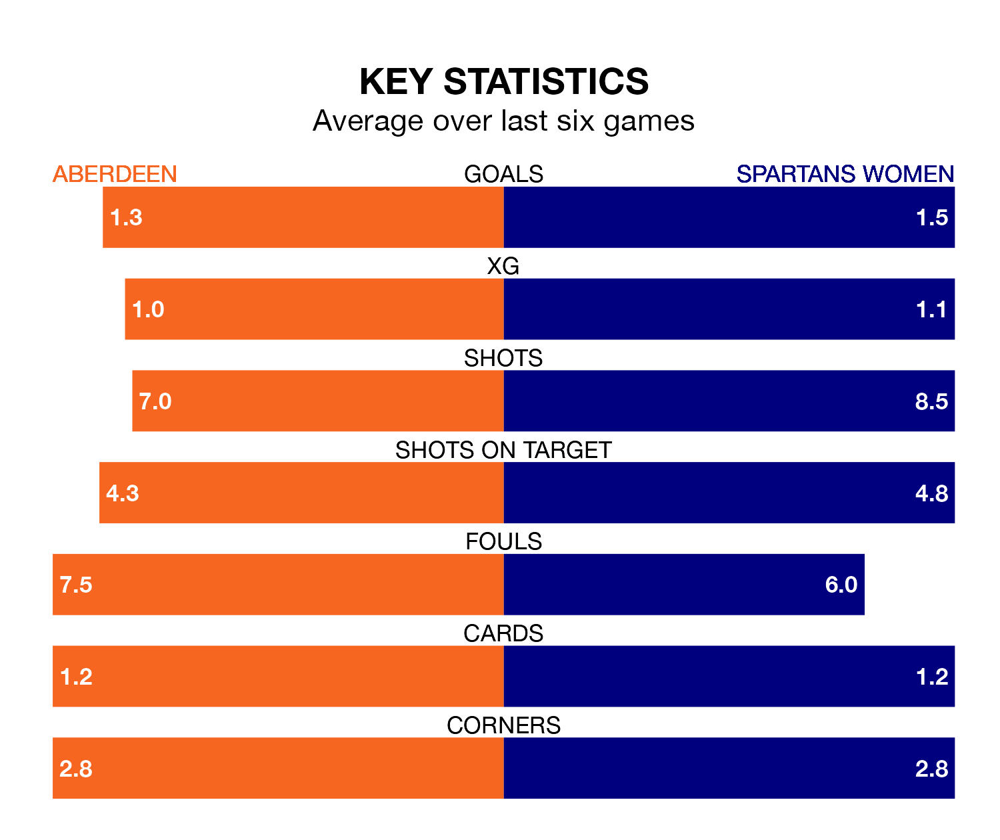

Spartans Women come to the Balmoral Stadium to play Aberdeen on early Sunday in poor form, having collected just four points from their last six games.
The visitors have won one and drawn one of their last six fixtures, while Aberdeen have two wins and four losses.
In the last 10 years, Aberdeen and Spartans have played each other on nine occasions. Aberdeen won two of them, Spartans four, and they drew three times.
On average, Aberdeen scored 1.3 goals and the Spartans 1.8 in those matches.
Their last meeting was on November 19, when Aberdeen won 2-1 at home.
In Bayley Hutchison, Aberdeen have one of the league's most on-form strikers so far this season. She has notched 16 goals in 22 appearances, to sit fourth in the scoring charts.
Spartans's top scorers, with four goals each, are Caley Gibb and Hannah Jordan.
With 26 goals in 22 games so far this season, the Spartans are scoring at below the league average rate with 1.2 goals per game. And they are conceding more than average, letting in 57 goals at a rate of 2.6 per game.
The hosts are also below average scorers, with 1.5 goals per game, compared to a league average of 2.2. They have conceded 3.3 goals per game.
The away team are ninth in the table after 22 games, of which they have won three and drawn four, earning 13 points.
Aberdeen are two places ahead of Spartans in seventh, with eight wins and one draw putting them on 25 points.
Aberdeen's last match was on March 3, a 8-1 loss against Glasgow City Women, with Hutchison getting the goal for Aberdeen.
Spartans lost 4-1 against Motherwell Women last time out, also on March 3, with Mya Bates on the scoresheet.
Updated: 09:34 (UTC), 08/03/24